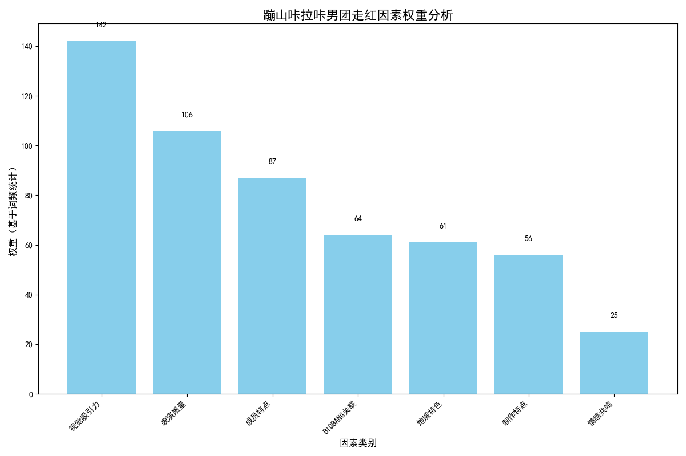

摘要
本报告基于对蹦山咔拉咔男团相关视频弹幕评论的数据分析，通过词频统计、词云图生成和深度文本分析，探究了该团体在网络平台迅速走红的原因。分析结果表明，蹦山咔拉咔男团的成功源于其高质量的表演内容、独特的地域文化特色、真实亲切的成员形象以及创新的制作方式等多方面因素的综合作用。
数据来源与处理
数据概况
- 数据来源：视频弹幕评论
- 数据规模：共收集1200条评论数据，其中有效分词数据929条
- 处理方法：使用Python的pandas、jieba等工具进行数据清洗和分词处理
数据处理流程
- 从Excel文件中提取弹幕内容
- 使用jieba进行分词处理
- 过滤词性，保留形容词和名词
- 生成词频统计和词云图
- 基于高频词进行主题分析
词云图分析
图1：蹦山咔拉咔男团弹幕评论词云图
主要关键词解读
从词云图中可以清晰地看出，以下关键词最为突出：
- 运镜（52次）：观众对视频拍摄技巧的高度认可
- 帅（53次）：成员形象和舞台魅力的吸引力
- 牛（55次）：对整体表现的直接赞赏
- 云南（35次）：地域特色成为重要标识
- 权志龙（24次）：与BIGBANG的关联引发关注
- 手机（22次）：低成本制作方式形成话题
高频词统计
词频统计前20个词: 牛: 55 帅: 53 运镜: 52 好: 46 人: 44 云南: 35 权志龙: 24 昭通: 23 手机: 22 感觉: 21 哥: 20 厉害: 19 帽子: 17 小声: 16 阶段: 16 咖: 16 韩国: 15 绝尘: 15 贵人: 15 太牛: 14
走红原因深度分析

图2：走红因素权重分析
核心走红因素
1. 表演质量卓越
- 运镜技巧：专业级别的拍摄手法是最受认可的因素
- 整体表现：观众用"牛"、"厉害"等词汇表达高度赞赏
- 专业水准：虽然是业余团队，但表演质量超出预期
2. 强烈的视觉吸引力
- 成员形象："帅"是出现频率第二高的词汇
- 舞台魅力：观众对成员的台风和表现力给予高度评价
- 时尚元素：如帽子等配饰成为讨论热点
3. 独特的地域文化特色
- 云南标识："云南"和"昭通"成为重要的地域标签
- 文化融合：西南地区文化元素与流行文化的结合产生新鲜感
- 地域认同：引发了云南地区观众的文化认同感
4. 与BIGBANG的巧妙关联
- 成员模仿："权志龙"等BIGBANG成员名字频繁被提及
- 创新改编：在模仿基础上加入自身特色
- 粉丝引流：借势国际知名男团的影响力
5. 低预算高创意的制作方式
- 手机拍摄：使用简单设备创造专业效果形成反差
- 一镜到底：展现了团队的实力和勇气
- 创意无限：有限条件下的创新能力获得赞赏
6. 真实亲切的成员关系
- 兄弟情谊：真实的兄弟关系引发观众共鸣
- 自然互动：成员间互动自然，没有距离感
- 个性鲜明："小声"、"月亮"等成员昵称体现个人特色
观众感受分析
情感倾向
通过对弹幕内容的分析，观众情感主要呈现以下特点：
- 赞赏之情：大量使用"牛"、"帅"、"好"等直接表达赞赏的词汇
- 惊讶与震撼：对草根团队能做出专业级表演感到意外
- 支持与鼓励：对"草根逆袭"故事的认同和支持
- 喜爱与追捧：通过多次观看和分享表达持续关注
观众心理需求
蹦山咔拉咔男团的走红反映了当代观众的以下心理需求：
- 真实感需求：相比包装过度的明星，观众更欣赏真实不做作的表演
- 逆袭情结：草根逆袭的故事满足了大众的心理期待
- 文化认同：地域文化元素引发了文化认同感和归属感
- 创新审美：对新颖、独特内容的持续追求
结论与启示
核心结论
蹦山咔拉咔男团的走红是多种因素共同作用的结果：
- 内容为王：高质量的表演内容和创新的运镜技巧是成功的基础
- 真实为本：真实亲切的成员形象和自然的互动赢得了观众的心
- 特色为魂：云南地域特色与流行文化的结合形成了独特魅力
- 反差为奇：低预算高创意的制作方式形成了强烈的话题反差
- 情感共鸣：草根逆袭的故事引发了广泛的情感共鸣
对内容创作者的启示
- 专业态度：即使是业余团队，也需要追求专业级的内容质量
- 真实表达：保持真实不做作的风格更容易获得观众认可
- 文化自信：挖掘和融入地域文化特色可以形成独特竞争力
- 创新思维：在有限条件下创造无限可能，创意比预算更重要
- 情感连接：建立与观众的情感连接是持续走红的关键